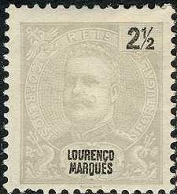
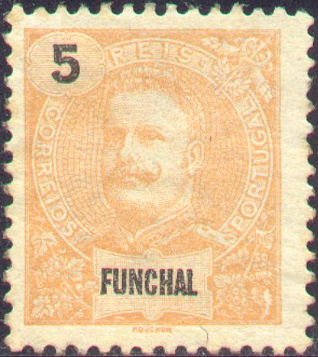
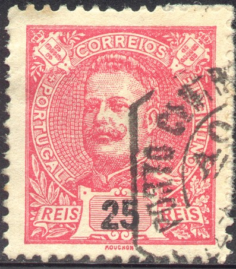

Return To Catalogue - Portugal
Note: on my website many of the
pictures can not be seen! They are of course present in the
catalogue;
contact me if you want to purchase the catalogue.
Many Portuguese colonies issued stamps in a similar design to the issue of Portugal of 1895. In order to save space, I have listed here all the different values for all colonies:
2 1/2 r grey 5 r orange 10 r green 15 r brown 15 r green 20 r lilac 25 r green 25 r red 50 r blue 50 r brown 65 r blue 75 r red 75 r brown on yellow (on some with value in red) 80 r lilac 100 r blue on blue 115 r brown on red 130 r brown on yellow 150 r brown on yellow 180 r black on red 200 r lilac 300 r blue on red 400 r blue on yellow 500 r black on blue (value in red) 700 r lilac on yellow
These stamps were issued for: Angola, Angra, Azores, Cape Verde, Funchal, Horta, Inhambane, Lorenzo Marques, Macao (value in Avo), Mozambique, Nyassa (overprint on Mozambique), Ponta Delgada, Portuguese Congo, Portuguese Guinea, Portuguese India (value in reis, tanga, or Rupie), St Thomas and Prince, Timor and Zambezia. Not all values were issued for all colonies. Some countries have the value at the left hand side (Angra, Funchal and Horta), others at the right hand side.



(Acores, Angra, Funchal and Horta have the value at the left hand
side)

(Corresponding issue of Portugal)


(Macao and Timor issues, value in 'AVO' or 'AVOS')

(Portuguese India, the inscription 'INDIA' is incorporated in the
basic design)
(Acores issue, the letters in the corners stand for 'Angra',
'Horta' and 'Ponta Delgada')
In 1902 many stamps were overprinted 'PROVISORIO' in fancy letters:
In 1905 a surcharge '50 REIS' was applied:
Many of these stamps exists with a 'REPUBLICA' overprint (from 1911 onwards), example:


(General overprint: same for all colonies)
(Local overprint, different for all colonies)


{kind=link}
{kind=link}
{kind=link}